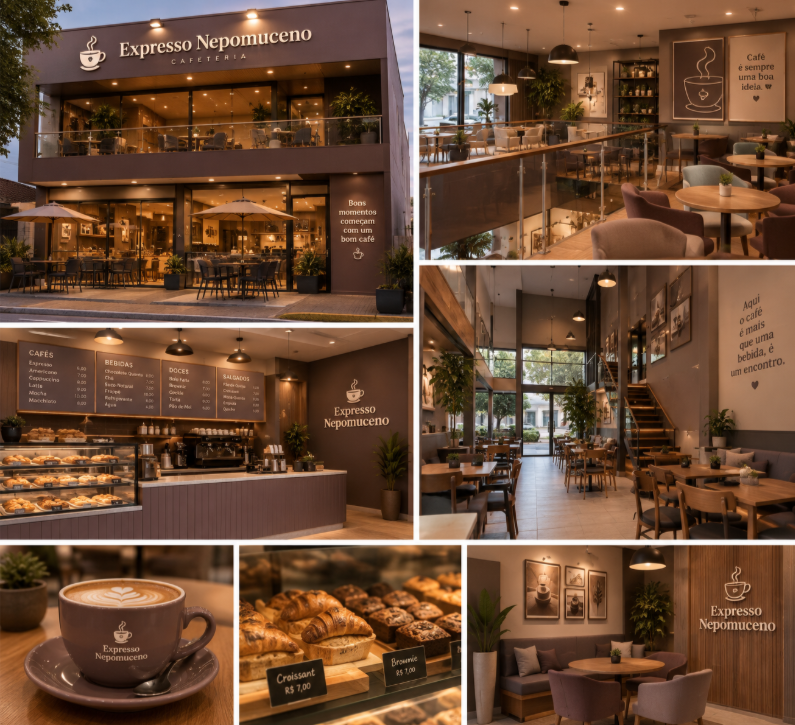

Mais do que café, um lugar para estar.
Conheça a história, os valores e o carinho que fazem parte do Cafeteriao Node.

Um café criado para aproximar pessoas.
O Cafeteriao Node nasceu da vontade de criar um lugar onde as pessoas pudessem desacelerar e aproveitar os pequenos momentos do dia.
Para nós, uma cafeteria não é apenas um lugar para tomar café. É um espaço para conversar, trabalhar, encontrar amigos, descansar ou simplesmente aproveitar alguns minutos de tranquilidade.
Cada bebida é preparada com cuidado, utilizando ingredientes selecionados e muita dedicação em cada detalhe.
Alguns dos melhores momentos começam com uma xícara de café.
— Cafeteriao NodeO que faz parte de nós.
Mais do que servir café, queremos proporcionar bons momentos.
Qualidade
Escolhemos nossos ingredientes com cuidado para oferecer bebidas saborosas e preparadas com atenção aos detalhes.
Aconchego
Criamos um ambiente confortável para que cada pessoa possa se sentir bem e aproveitar seu momento.
Carinho
Colocamos carinho em cada preparo, desde o primeiro contato até o último gole da sua bebida.
Seu momento merece ser aproveitado.
Seja para começar a manhã, fazer uma pausa durante o trabalho ou encontrar alguém especial, o Cafeteriao Node está pronto para receber você.
Nosso objetivo é fazer com que cada visita seja leve, agradável e, claro, acompanhada de um café delicioso.
Conheça nosso cardápio →Café especial
Preparado na medida certa.
Ambiente acolhedor
Um espaço para você relaxar.
Momentos especiais
Pequenos momentos que ficam.